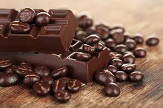
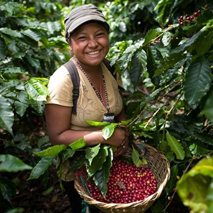

Check out this month's special offer!
We only use traditional methods of harvest to ensure both the highest quality product and to leave as small of a carbon foot print as possible.
Met Sofia
The traditional of harvesting and preparing cocoa was taught to Sofia by her mother who learned the traditional techniques from her mother when she was young as well.

To take a bitter tasting, nearly inedible little bean and turn it into something sweet and rich takes 1 part magic and 3 parts hard work. This is what my mother always told me. While it is true the real process these beans go through takes a lot of skill and hardwork, it can be broken down into about 8 steps. After they are harvested the beans go through many processes including fermentation, drying, roasting. The edible part of the bean called nibs is then processed further into cocoa butter. This butter can then be used to make candy, cakes, or traditional drinks. The process has changed very little in hundreds of years.